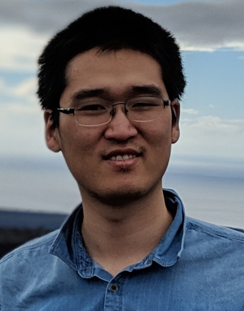
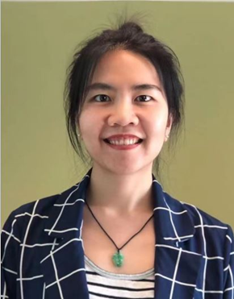

Program
June 19, 2023 (Location: West 107-108)
Workshop program (Vancouver Local Time (PDT, GMT-7))
Tianfan Xue
The Chinese University of Hong Kong
Tianfan Xue is currently an Assistant Professor at the department of information engineering of The Chinese University of Hong Kong (CUHK). Before that, he has worked in the computational photography team at Google Research as Staff Engineer for more than five years. He received his Ph.D. degree from the Computer Science and Artificial Intelligence Laboratory (CSAIL) of Massachusetts Institute of Technology (MIT) in 2017, under the supervision of Prof. William T. Freeman, M.Phil. degree from the Chinese University of Hong Kong (CUHK) in 2011, under the supervision of Prof. Xiaoou Tang, and Bachelor degree from Tsinghua University. His research focuses on computational photography, computer vision and graphics, and machine learning. He also served as the web chair of the Conference on Computer Vision and Pattern Recognition (CVPR) 2020, the area chair of Winter Conference on Applications of Computer Vision (WACV), and the area chair of CVPR 2023.
Jinwei Gu
The Chinese University of Hong Kong
Jinwei Gu is an Associate Professor at The Chinese University of Hong Kong. His current research focuses on low-level computer vision, computational photography, computational imaging, and appearance modeling. He obtained his Ph.D. degree in 2010 from Columbia University, and his B.S and M.S. from Tsinghua University, in 2002 and 2005 respectively. Before joining CUHK, he was the R&D Executive Director at SenseBrain from 2018 to 2023 working on computational photography on mobile phones. Prof. Gu serves as an associate editor for IEEE Transactions on Computational Imaging (TCI) and IEEE Transactions on Pattern Analysis and Machine Intelligence (TPAMI), an area chair for ICCV2019, ECCV2020, CVPR2021, CVPR2023, ICCV2023, NeurISP2023, and industry chair for ICCP2020 and ICCP2023.
Jong Chul Ye
Korea Advanced Institute of Science and Technology

Jong Chul Ye is a Professor of the Graduate School of Artificial Intelligence (AI) of Korea Advanced Institute of Science and Technology (KAIST), Korea. He received the B.Sc. and M.Sc. degrees from Seoul National University, Korea, and the Ph.D. from Purdue University, West Lafayette. Before joining KAIST, he worked at Philips Research and GE Global Research in New York. He has served as an associate editor of IEEE Trans. on Image Processing, and an editorial board member for Magnetic Resonance in Medicine. He is currently an associate editor for IEEE Trans. on Medical Imaging, and a Senior Editor of IEEE Signal Processing Magazine. He is an IEEE Fellow, was the Chair of IEEE SPS Computational Imaging TC, and IEEE EMBS Distinguished Lecturer. He was a General Cochair (with Mathews Jacob) for IEEE Symp. On Biomedical Imaging (ISBI) 2020. His research interest is in machine learning for biomedical imaging and computer vision.
Vishal M. Patel
Johns Hopkins University
Vishal M. Patel is an Associate Professor in the Department of Electrical and Computer Engineering (ECE) at Johns Hopkins University. Prior to joining Hopkins, he was an A. Walter Tyson Assistant Professor in the Department of ECE at Rutgers University and a member of the research faculty at the University of Maryland Institute for Advanced Computer Studies (UMIACS). He completed his Ph.D. in Electrical Engineering from the University of Maryland, College Park, MD, in 2010. He has received a number of awards including the 2021 NSF CAREER Award, the 2016 ONR Young Investigator Award, the 2016 Jimmy Lin Award for Invention, A. Walter Tyson Assistant Professorship Award, Best Paper Awards at IEEE AVSS 2017 and 2019, Best Paper Award at IEEE BTAS 2015, Honorable Mention Paper Award at IAPR ICB 2018, two Best Student Paper Awards at IAPR ICPR 2018, and Best Poster Awards at BTAS 2015 and 2016. He is an Associate Editor of the IEEE Signal Processing Magazine, Pattern Recognition Journal, and serves on the Machine Learning for Signal Processing (MLSP) Committee of the IEEE Signal Processing Society. He serves as the vice president of conferences for the IEEE Biometrics Council. He is a member of Eta Kappa Nu, Pi Mu Epsilon, and Phi Beta Kappa.
Kevin J. Miller
U.S. Army C5ISR Center
Kevin J. Miller is currently a senior physicist with the U.S. Army. He received his B.S. in physics from the University of Maryland, College Park in 2010. In 2015, he completed a Ph.D. in geology with focus in geophysics, also from the University of Maryland. His dissertation focused on modeling porous flow in complex geo-materials and their implications for Earth geodynamics. Dr. Miller went on to complete a post-doctorate program in the Geophysics Department at Stanford University where he studied effective medium theory with applications to petroleum geology. Currently, Dr. Miller works as a resident expert in computer vision, image science, data collection, machine learning, and modeling optical turbulence.
Nianyi Li
Clemson University
Nianyi Li is an Assistant Professor in the School of Computing at Clemson University. She has worked as a postdoctoral associate in IVLAB with Prof. Jinwei Ye in the Computer Science Department at Louisiana State University (LSU). Before that, she worked in the Carl E Ravin Advanced Imaging Laboratories (RAI Labs) at Duke University as a Postdoc for one and a half years with Prof. Maciej Mazurowski in Radiology Department. She received her Ph.D. Degree in Computer and Information Sciences at the University of Delaware, under the supervision of Prof. Jingyi Yu. She earned her B.E. Degree in Electronic and Information Engineering at Huazhong University of Science and Technology. Her research interests are in machine learning, computer vision, computational photography, and medical image processing.
Emma Alexander
Northwestern University
Emma Alexander is an assistant professor of computer science at Northwestern University, where she run the Bio-Inspired Vision Lab. The lab focuses on low-level, physics-based vision, based on the diverse, robust, and efficient sensing mechanisms evolved in animals. Emma completed bachelor's degrees in physics and computer science from Yale, the MS and PhD in computer science from Harvard, and was a postdoc in vision science at UC Berkeley. Her work has been awarded best student paper at ECCV and best demo at ICCP.
Sabine Süsstrunk
EPFL
Sabine Süsstrunk leads the Image and Visual Representation Lab in the School of Computer and Communication Sciences (IC) at EPFL since 1999. From 2015-2020, she was also the first Director of the Digital Humanities Institute (DHI), College of Humanities (CdH). Her main research areas are in computational photography, computational imaging, color image processing and computer vision, machine learning, and computational image quality and aesthetics. Sabine has authored and co-authored over 200 publications, of which 7 have received best paper/demo awards, and holds over 10 patents. Sabine served as chair and/or committee member in many international conferences on image processing, computer vision, and image systems engineering. She is President of the Swiss Science Council SSC, Founding Member and Member of the Board (President 2014-2018) of the EPFL-WISH (Women in Science and Humanities) Foundation, Member of the Board of the SRG SSR (Swiss Radio and Television Corporation), and Member of the Board of Largo Films. She received the IS&T/SPIE 2013 Electronic Imaging Scientist of the Year Award for her contributions to color imaging, computational photography, and image quality, and the 2018 IS&T Raymond C. Bowman and the 2020 EPFL AGEPoly IC Polysphere Awards for excellence in teaching. Sabine is a Fellow of IEEE and IS&T.